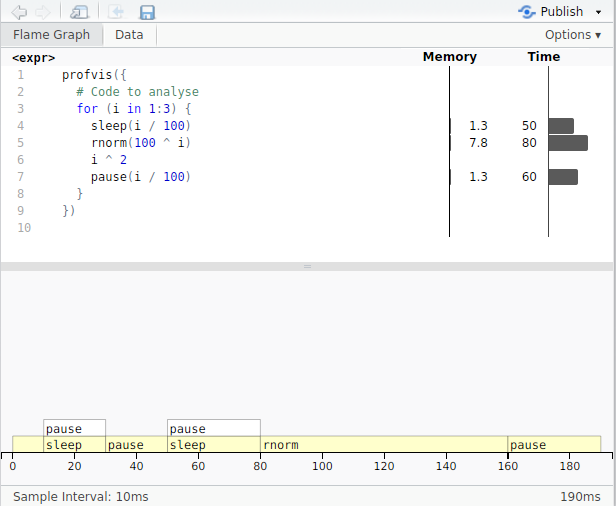

profvis - code profiling in R
Usually, when you run R code interactively, it is easy to spot which parts of the script are the most time-consuming. Nevertheless, for functions or nested loops, it may be not so obvious. In such moments, having code profiler is very helpful. I've tried few different ones and I can recommend profvis as a first-choice profiler. There are two reasons. First, the package is extremely easy to start and use. Second, what is really important, it does not require wrapping up code into the function. So you can analyse any piece of the script.
Remember, when you want to optimise your code and rewrite it, you should focus on the most resource-consuming parts.
profvis - installation
To install the profiler package, execute the command below:
install.packages('profvis')
Code profiling
Everything, what you have to do to start with the profiler, is putting your code as an argument for the profvis function. Seriously, that's all.
library(profvis)
sleep <- function(s) {
pause(s)
}
profvis({
# Code to analyse
for (i in 1:3) {
sleep(i / 100)
rnorm(100 ^ i)
i ^ 2
pause(i / 100)
}
})
When the command executions finish, you will see the result of analysis. For each line of the code, there are memory and time consumptions as well as a timeline with the call stack.

On the timeline from the screenshot above, some of the calls can be not visible when they are very short. If you still want to see them, you can increase sampling interval using profvis parameter interval. By default, sampling is done every 10ms.
Links
You can find additional information on the following pages: